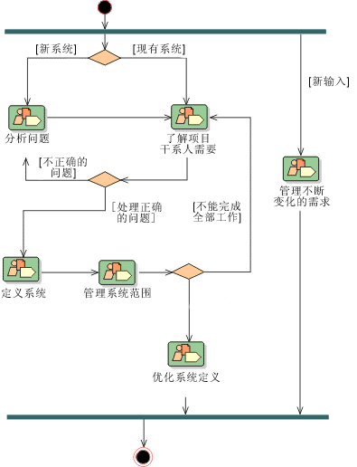

| 概念：能力模式 |
 |
|
主要描述
|
能力模式说明并传达了关于受关注的关键领域（例如规程或实践）的流程知识，并且可以由流程执行人员直接用来指导他们的工作。它们还可以用作构建块，以组成交付流程或较大的能力模式，确保能最佳地重用和应用它们所表示的关键实践。
能力模式的示例有“基于用例的需求管理”、“用例分析”或“单元测试”。通常情况下（但不一定），能力模式的范围包括一个规程（它对可复用的复杂活动进行细分）、与在这些活动中执行任务的角色之间的关系，以及使用和产生的工作产品。能力模式通常与开发生命周期的任何特定阶段或迭代无关，不应暗指开发生命周期中的任何特定阶段或迭代。换句话说，应该将模式设计为可适用于交付流程中的任何阶段或迭代。这使得它的活动可以被灵活地分配给交付流程中将应用它的任何阶段。例外情况是在交付流程的特定阶段期间想要提供模板以快速创建迭代或部分迭代的能力模式。
通常使用 UML 活动图表示法来表示能力模式的工作流程。 
一个样本活动图，来自 RUP 中的需求规程，该活动图显示工作流程和移交。 |
© Copyright IBM Corp. 1987, 2005 All Rights Reserved |